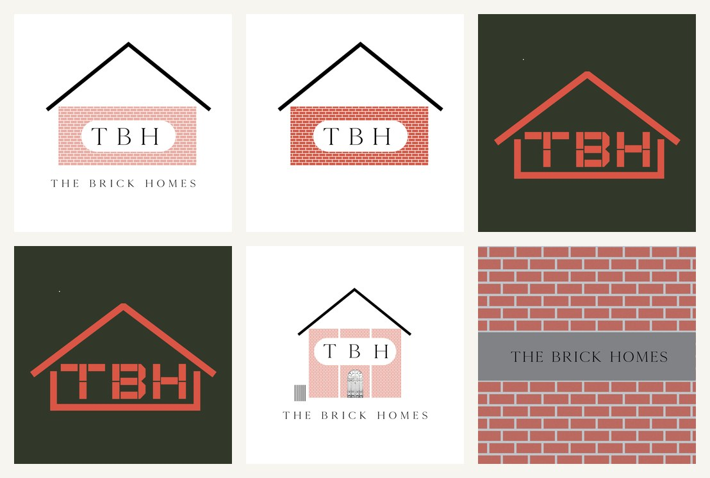
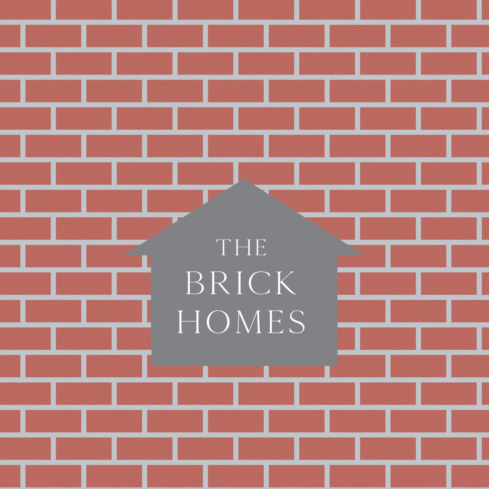

A logo identity for The Brick Homes — a real-estate brand that goes by "TBH". The mark builds its own meaning: the monogram sits inside a brick wall beneath a pitched roof, so the logo reads, at a glance, as a small house made of its own name.
"The Brick Homes" is about as literal a name as a property brand can have, so the logo leans in rather than away. The "TBH" monogram is laid into a course of brick, capped with a simple pitched roofline — a house drawn from the letters themselves.
It's friendly and immediately legible, the kind of mark that works on a hoarding, a site board or a small social avatar without explanation.


The name, the material, the shelter — one shape.
Three ideas fold into a single icon: the brick (the material and the name), the pitched roof (home, shelter), and the "TBH" set in a calm serif (the brand). Routes tested it on cream, on forest green, and reversed into a brick texture, so the mark holds up whether it's printed light, dark or laid straight onto a wall.
Real-estate branding lives outdoors — on boards, fences and signage at scale. The brick-wall lockup of "The Brick Homes" was drawn for exactly that: a version that can run metres wide on a hoarding and still read as the same tidy little house.